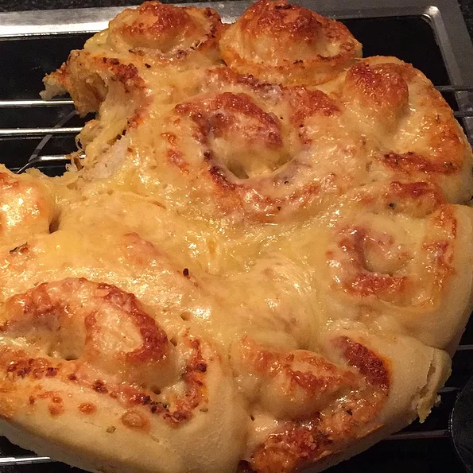

These garlic and Parmesan cheese dinner rolls are really great – crusty and cheesy
on the outside, tender and garlicky inside, and visually gorgeous.
Ingredients:
- 1 (.25 ounce) package active dry yeast
- ½ cup all-purpose flour
- ½ teaspoon white sugar
- 1 cup warm water - 100 to 110 degrees F (40 to 45 degrees C)
- 1 teaspoon fine salt
- 1 tablespoon olive oil
- 1 egg
- 1 ¾ cups all-purpose flour
- 1 ½ tablespoons melted butter
- 2 cloves garlic, crushed
- ½ cup freshly grated Parmigiano-Reggiano cheese
- ½ teaspoon ground black pepper, or to taste
- ¼ teaspoon cayenne pepper, or more to taste
- 2 tablespoons freshly chopped Italian parsley
- olive oil for brushing
- ¼ cup freshly grated Parmigiano-Reggiano cheese
steps
- Mix yeast, 1/2 cup of flour, sugar, and warm water in a bowl. Cover and
let rest in a warm place until bubbling, about 15 to 20 minutes.
- Stir in salt, olive oil, and egg. Mix thoroughly and stir in remaining 1 3/4 cup
flour to form a loose, sticky dough that pulls away from the sides of the
bowl. Cover with a damp towel and let rise in a warm place until doubled in
size, about 1 to 1 1/2 hours.
- Punch down and scrape the dough from the sides of the bowl. Turn onto a
lightly floured surface. Sprinkle with more flour and shape into a rectangle.
Roll out to an approximately 10x12-inch rectangle, about 1/2-inch thick.
Brush with melted butter; sprinkle with garlic, Parmagiano-Reggiano
cheese, black pepper, cayenne, and parsley.
- Press flat one long edge of the rectangle and brush with water. From the
opposite end, roll evenly into a log. Press the seam together to seal.
- Cut into 8 rolls. Transfer to a baking sheet, cut side up. If necessary, cut an
'X' in the top of each roll to expose filling.
- Preheat an oven to 400 degrees F (200 degrees C).
- Brush each roll with olive oil. Sprinkle with more cheese. Cover and let rise
until slightly puffed, about 20 to 30 minutes.
- Bake in preheated oven until the tops are golden brown, about 20 minutes.
- enjoy your meal
Return to top
Return to main page